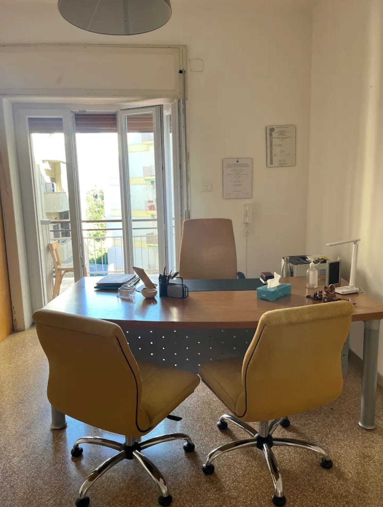

Comprendere
Il lavoro terapeutico aiuta la persona a comprendere il proprio funzionamento psicologico e a riconoscere i meccanismi che possono alimentare la sofferenza.
A volte tutto ciò di cui abbiamo bisogno è un luogo in cui poter rallentare, dare voce a ciò che stiamo vivendo e sentirci accolti senza giudizio.
Psicologa e Psicoterapeuta
Credo che ogni persona abbia bisogno di uno spazio in cui sentirsi ascoltata, compresa e accolta senza giudizio.
Nel mio lavoro accompagno bambini, adolescenti e adulti attraverso percorsi costruiti sulle loro esigenze, nel rispetto dei loro tempi e della loro storia.
quando tutto sembra correre troppo veloce.
quando comunicare diventa difficile.
quando la vita chiede nuovi equilibri.
quando ciò che senti diventa difficile da comprendere.
quando senti il bisogno di conoscerti meglio.
quando accompagnare un figlio significa mettersi in gioco ogni giorno.
Se ti riconosci in una di queste situazioni, possiamo parlarne.
Parliamone
Lo studio è uno spazio pensato per accogliere la persona in un clima di ascolto, rispetto e riservatezza.
Un luogo in cui poter portare domande, difficoltà, emozioni e cambiamenti senza sentirsi giudicati.
Ogni persona porta con sé una storia unica, fatta di esperienze, emozioni, risorse e difficoltà. Per questo ogni percorso viene costruito su misura, rispettando tempi, bisogni e obiettivi personali.
Il lavoro terapeutico aiuta la persona a comprendere il proprio funzionamento psicologico e a riconoscere i meccanismi che possono alimentare la sofferenza.
Il percorso inizia con una fase di conoscenza e valutazione, utile a definire obiettivi condivisi e costruire un intervento personalizzato.
Attraverso strategie e tecniche validate scientificamente, adattate alle esigenze della persona, si lavora per affrontare le difficoltà quotidiane con maggiore consapevolezza.
L’obiettivo non è solo ridurre il disagio, ma favorire nuove modalità di affrontare le difficoltà e promuovere un benessere più stabile nel tempo.
La terapia rappresenta uno spazio sicuro, privo di giudizio, in cui sentirsi accolti e compresi. Il cambiamento nasce dal lavoro condiviso, dalla fiducia reciproca e dall’impegno costruito passo dopo passo.
Università degli Studi di Napoli Federico II
Università di Roma "La Sapienza"
Psicodiagnostica Clinica e Giuridico-Peritale presso CIFRIC
Psicologa
Istituto A.T. Beck – Caserta
📍 Via Libertà 206, Portici (NA)
📞 345 450 1775
✉️ jessica_diflumeri@libero.it
📱 @jessicadiflumeri_psicologa
💻 Colloqui in presenza e online
Via Libertà 206
Portici (NA)
Colloqui in presenza e online
Apri su Google Maps →
Ogni storia merita uno spazio
in cui essere ascoltata.